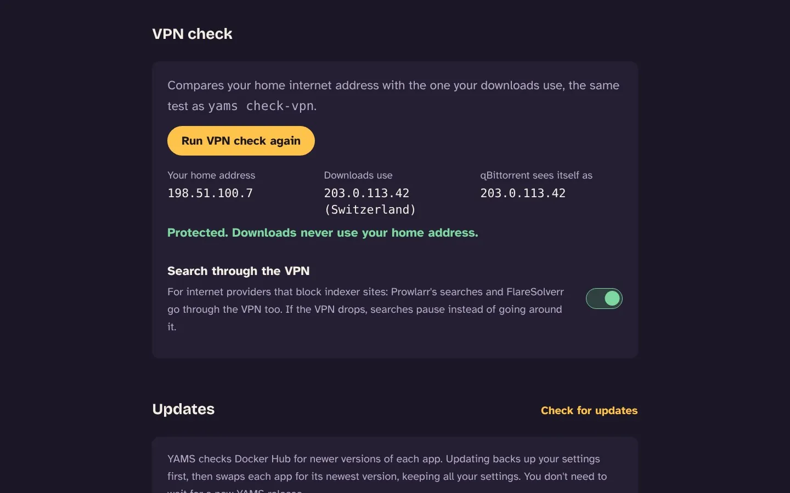
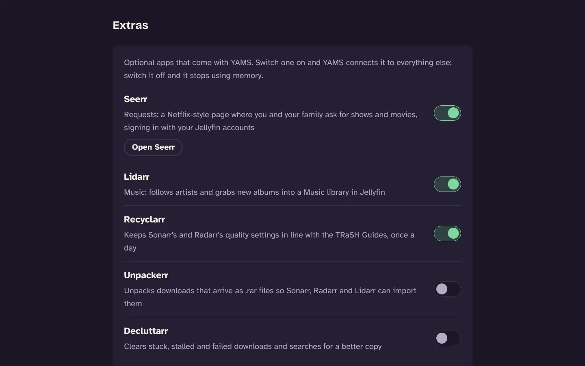

More apps for your Umbrel, right in its App Store.
Canopy is a community app store with 14 apps Umbrel's own store doesn't have. Every update is installed and tested on umbrelOS before it reaches you.
https://github.com/Deepshah0308/canopy-umbrel-store
- Open the App Store, click ⋯
- Choose Community App Stores
- Paste and click Add
Canopy App Store
YAMS: your own Netflix in one install
Jellyfin, Sonarr, Radarr, Prowlarr, Bazarr and qBittorrent behind a VPN, already wired together, with a dashboard that walks you through the rest.
See how YAMS works YAMSYour own Netflix — movies, shows and subtitles, fully automatic
YAMSYour own Netflix — movies, shows and subtitles, fully automatic BigcapitalAccounting and inventory for small businesses
BigcapitalAccounting and inventory for small businesses ByteStashSave, organise and share your code snippets
ByteStashSave, organise and share your code snippets FeishinBeautiful music player for your Jellyfin or Navidrome library
FeishinBeautiful music player for your Jellyfin or Navidrome library GatusUptime monitor and status page for your apps and websites
GatusUptime monitor and status page for your apps and websites JDownloader 2Download manager for file hosts, video sites and link lists
JDownloader 2Download manager for file hosts, video sites and link lists linkdingFast, minimal bookmark manager with tags and archiving
linkdingFast, minimal bookmark manager with tags and archiving MinifluxMinimalist, fast RSS reader with no clutter
MinifluxMinimalist, fast RSS reader with no clutter Mylar3Comic book automation: follows series and grabs new issues
Mylar3Comic book automation: follows series and grabs new issues NetdataReal-time health of your Umbrel: CPU, memory, disks, network and every app
NetdataReal-time health of your Umbrel: CPU, memory, disks, network and every app NZBGetEfficient Usenet downloader that runs well on small machines
NZBGetEfficient Usenet downloader that runs well on small machines openHABVendor-neutral home automation that runs entirely at home
openHABVendor-neutral home automation that runs entirely at home RustFSFast S3-compatible object storage, a MinIO alternative written in Rust
RustFSFast S3-compatible object storage, a MinIO alternative written in Rust SiYuanPrivate notes and knowledge base with blocks, links and databases
SiYuanPrivate notes and knowledge base with blocks, links and databases
No app matches that. Suggest one.
Checked for new versions every morning. Nothing here duplicates an official Umbrel app.
Every update is tested before you see it
The same rules for every app, so nobody has to remember to do it.
Check
Every morning a bot asks each app's publisher for new releases. Betas and nightlies are ignored.
Test
It installs the new version exactly the way your Umbrel would, on both kinds of chip Umbrels use, and checks the app starts and answers.
Ship or ask
Fixes and small releases go out the same day. Big version jumps wait for a person to read the release notes first.
YAMS: Jellyfin, Sonarr, Radarr and a VPN, wired together for you
YAMS (Yet Another Media Server, by rogs) packaged for Umbrel, so you go from Install to watching without a terminal or a config file. One install gives you a complete, private media server; its dashboard walks you through the rest.
 JellyfinWatch
JellyfinWatch SonarrTV shows
SonarrTV shows RadarrMovies
RadarrMovies ProwlarrIndexers
ProwlarrIndexers BazarrSubtitles
BazarrSubtitles qBittorrentDownloads
qBittorrentDownloads FlareSolverrCloudflare checks
FlareSolverrCloudflare checks gluetunVPN tunnel
gluetunVPN tunnel
The setup you'd normally do by hand, already done
- Run Jellyfin's setup wizard and create libraries
- Admin user and Movies and Shows libraries created, with real-time folder watching
- Copy API keys between apps
- Keys generated up front; Sonarr, Radarr, Prowlarr and Bazarr wired together
- Add qBittorrent to Sonarr and Radarr
- Done, with
tvandmoviescategories - Plan library folders
- Hardlink-friendly folders following the TRaSH Guides layout
- Set up FlareSolverr
- Added to Prowlarr and tagged, so Cloudflare-protected indexers work
- Write VPN config for gluetun
- Paste a WireGuard file; YAMS cleans it into the form gluetun needs
- Log in to five different web apps
- Everything except Jellyfin sits behind your Umbrel login


Downloads only through your VPN
qBittorrent lives inside the VPN tunnel. If the VPN drops, downloads stop instead of using your home connection. VPN check proves it any time.
Extras are one switch
Seerr for family requests, Lidarr for music, Recyclarr for TRaSH quality settings, Unpackerr for .rar downloads and Decluttarr for stuck downloads. YAMS connects each one for you.
Graphics card transcoding
On umbrelOS 2.1 and newer, Jellyfin can use Intel, AMD or NVIDIA graphics to transcode for phones and TVs.
Indexers blocked by your ISP?
Switch on Search through the VPN and Prowlarr's searches go through the tunnel too.
Backups in one click
Every app's settings and your VPN file, saved to your Downloads folder, on a schedule if you like.
Fix everything button
If something stops talking to something else, Quick fixes re-checks every connection and only changes what's wrong.
Set it up in four steps
- Connect a VPNPaste a WireGuard file from Proton VPN, Mullvad, AirVPN or similar. Downloads stay off until it works.
- Choose where YAMS searchesAdd indexers in Prowlarr; they reach Sonarr and Radarr on their own.
- Add a show or a movieIn Sonarr or Radarr, or let your family ask for them in Seerr.
- WatchIn Jellyfin at
umbrel.local:8097, on your TV, phone or browser.
Moving from the old YAMS store? The two can't run side by side, so: in your current YAMS, open Backups and press Back up now. Uninstall it (your media and backups in Downloads stay), remove the old store and add Canopy, install YAMS from Canopy, then restore that backup. Settings, logins, VPN and library come with you, and TV apps keep working on the same port.
Questions
How do I add a community app store to Umbrel?
In Umbrel, open the App Store, click ⋯ in the top right and choose Community App Stores. Paste https://github.com/Deepshah0308/canopy-umbrel-store and click Add. Canopy's apps then show up in their own section of the App Store.
How do I install Jellyfin, Sonarr and Radarr on Umbrel together?
Install YAMS from Canopy. It sets up Jellyfin, Sonarr, Radarr, Prowlarr, Bazarr and qBittorrent behind a VPN in one install, already connected to each other, with a dashboard to finish setup.
What is YAMS on Umbrel?
YAMS (Yet Another Media Server) is a complete media server in one app: Jellyfin to watch, Sonarr and Radarr to find shows and movies, Prowlarr for indexers, Bazarr for subtitles and qBittorrent for downloads, all behind a VPN and already connected to each other. Canopy packages it for Umbrel so it installs from the App Store.
Do YAMS downloads go through a VPN?
Yes, only. qBittorrent runs inside the VPN tunnel (gluetun), so if the VPN drops, downloads stop rather than using your home connection. The dashboard's VPN check compares your home address with the one downloads use.
Which VPNs work with YAMS?
Any VPN that gives you a WireGuard configuration file, such as Proton VPN, Mullvad or AirVPN. Download the file from your VPN's website and paste it into the YAMS dashboard.
Can Jellyfin use my graphics card on Umbrel?
Yes, on umbrelOS 2.1 and newer. YAMS asks Umbrel for GPU access, then you pick NVENC (NVIDIA) or VAAPI/QSV (Intel and AMD) in Jellyfin under Dashboard → Playback → Transcoding. See the transcoding guide.
Do I need to use a terminal?
No. Add the store address, click Install. Apps that need a login show it on their page in the App Store.
Is it safe?
Community stores aren't reviewed by Umbrel, so it's fair to ask. Every app here is pinned to an exact, published version from its official publisher, apps without their own login sit behind your Umbrel login, and nothing gets more access than it needs. Netdata, for example, can list your containers through a read-only proxy but can't start or stop anything. Found a problem? Report it privately.
Will it work on my Raspberry Pi?
Yes. Every app must run on both Umbrel Home and PCs (amd64) and on Raspberry Pi (arm64), and the store's checks refuse any version that doesn't.
An app I want isn't here.
Suggest it. If Umbrel's official store already has it, install it from there; Canopy doesn't duplicate official apps.
Something's broken.
For YAMS, try Quick fixes → Fix everything on its dashboard first. Otherwise open an issue with the app's logs (right-click the app in Umbrel → Troubleshoot).